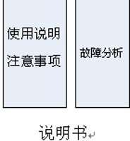

本章将要介绍接口的各方面的知识，主要有抽象类，以及多态的特性等。通过学习这些知识可以让同学们更深入地了解面向对象的思想，以及在平常的编码中的一些注意事项。通过本章的学习，同学们应该完成如下几个目标。
- 会定义接口和访问接口中的变量。
- 熟练掌握接口的使用。
- 了解接口和抽象类的区别。
- 了解接口的多态问题。
- 熟练掌握使用instanceof判断类型。
所谓接口就是一个完成某些特定功能的类。在日常生活中就好比一个产品的说明书，通过阅读说明书可以让消费者更多地了解产品的功能以及使用中的注意事项。在Java中也是如此，接口是一个功能的集合，如图所示。
首先来举一个例子，汽车的移动就好比一个接口，在以后生产的汽车中都遵循这个接口进行制造。而接口中只定义了汽车移动的形式，没有具体的去定义是怎么进行移动的，所以接口就好比是一个规定。下面介绍下如何定义一个接口。
接口修饰符 interface 接口名称
{
//成员变量和方法的申明
}
接口修饰符和类的修饰符是一样的。
interface是定义接口的关键字。
接口里的成员变量默认为public static final类型的
接口不能声明为final的，因为final类型的必须要实现。
在接口里定义的成员变量为常量，是因为接口为每个成员变量默认的修饰是public static final类型的，即便不显式的修饰也默认的加上了。下面通过代码来演示接口里的常量。
//创建一个包，名字为a
package a;
//创建一个接口名字为aaa
public interface aaa
{
int i = 2;
}
import a.aaa;
//test类描述的是访问接口的常量
public class test
{
//Java程序的主入口方法
public static void main(String[] args)
{
//取得接口里的值
int n = aaa.i + 1;
//打印并显示结果
System.out.println(n);
}
}
接口就是一个特殊的抽象类，抽象类里有抽象的方法和普通的方法，而接口里方法全为抽象的，需要在其子类进行具体的方法实现。类就是一个产品的详细功能说明，而接口就是这些功能的简要说明。在本节里详细说明接口是如何使用的，以及它们的注意事项。
在接口里创建方法和一个类里的方法很相似，但不同点就是接口里的方法没有具体的方法体，而类里的方法必须去实现其方法体。下面用一段代码来演示在接口里如何定义方法。
//创建一个接口名字为aaa
public interface aaa
{
//创建一个接口方法getMax()
public int getMax();
//创建一个接口方法getMes()
String getMes();
}
总结一下接口的方法和类里的方法的区别。在定义接口里的方法和类里的方法都是有一定规则的，但是它们之间的定义是有一定区别，分别如下：
接口里的方法默认被修饰为public、abstract类型。
类里的方法如果修饰为abstract类型，将提示错误。
接口里的方法不能是static、final类型，只能为public、abstract类型。
类里的方法不能为final、abstract类型。
在前面小节里介绍了接口创建及其注意事项，创建接口就是为了来使用。下面介绍如何使用接口，以及使用接口的注意事项。接口的语法为：
类的修饰符 class 类名称 implements 接口名称。
通过上面的语法结构可以看出和类的继承很相似，下面通过一段代码来演示接口是如何实现的。
//创建一个包,名字为a
package a;
//创建一个接口名字为aaa
public interface aaa
{
//创建一个接口方法getMax
public int getMax();
//创建一个接口方法getMes
String getMes();
}
import a.aaa;
//test类描述的是实现接口的方法
public class test implements aaa
{
//实现接口里的方法
public int getMax()
{
//具体的方法体
return 0;
}
//实现接口里的方法
public String getMes()
{
//具体的方法体
return null;
}
}
抽象类和接口是有些类似的，抽象类需要其他类继承来实现抽象类中的方法，以及给出更多的方法。在日常生活中的一个产品的简要介绍和详细介绍的结合，说明了产品具有什么功能，和这个功能都完成了什么。在Java中也是类似的，接口是抽象类的特殊版本。接口里必须都为抽象的，而抽象类里可以为抽象的也可以有其他形式的存在。
抽象类和一般的类很相似，所谓抽象类，就是在类里存在一些没有方法体的方法，即抽象方法。下面通过一段代码来演示抽象类。
public abstract class Test
{
public void test() { //普通方法
System.out.println("存在方法体的方法");
}
public abstract void print();//抽象方法，没有方法体，用abstract关键字做修饰
}
下面总结抽象类的特点，如下所示。
在前面的小节里学习了抽象类和接口，它们之间很相似但是也是有区别的。它们之间的区别如下：
所谓多态，就好比日常生活中的橘子和羊肉都是食物的一种，而橘子又是水果的一种，羊肉是肉类的一种，橘子和羊肉是两种不相同的食物，但是食物可以同时指向它们这两种物品。这就是日常生活中多态的形式。在Java中也是如此。食物的对象可以指向橘子和羊肉对象。这样给编写代码带来了很大的灵活性。
【范例】下面通过一个例子来演示接口是如何实现多态的。首先创建一个food接口。
//创建一个food接口
interface food
{
//得到食物的名称
public void getname();
//吃食物的方法
public void eat();
}
instanceof一般使用于多态的时候，在代码中判断对象的引用类型具体为哪一种类型。根据不同的对象类型来执行不同对象中的方法。本小节介绍什么是instanceof，以及使用它的注意事项。
所谓instanceof在字面上可以理解为检查实例。instanceof在Java中是一个二元操作符，也是Java所保留的关键字。下面介绍instanceof的语法结构：
对象的引用 instanceof 类或接口
instanceof语句的返回结果是boolean类型的。如果返回true，说明对象的引用是该对象所指的类或接口；如果返回false，说明对象的引用是该对象所指的类或接口。
在使用instanceof进行对象类型判断的时候也是有规则要遵循的，下面总结使用instanceof有哪些规则
【提示】抽象类中有一个抽象方法或多个抽象方法。接口中的方法全部都被修饰为抽象方法，并且接口里的方法都被默认修饰为public abstract类型的。
如果抽象类的子类里有一个没有实现的抽象方法，那么这个类也是抽象类。一个类可以实现一个接口，也可以实现多个接口。
实现抽象类里的方法可以实现部分方法，也可以实现所有方法。接口里的方法必须要全部实现。
抽象类里可以有成员变量。抽象类里可以有私有的方法和私有的成员变量。接口里的变量都被默认修饰为public static final类型，即常量。接口里没有成员变量。接口里的方法全部都是public，即公共类型的。
本章学习了一个更重要的知识——接口，对象通过多态可以使其变得灵活，而接口可以使对象变得更加灵活。接口是基于继承的，通过在编译期和运行期来扮演不同的类型。学好本章知识能更好地了解面向对象的知识。如果想了解更多的关于本章的内容，可以参考电子工业出版社出版的《深入浅出JDK 6.0》一书进行学习。